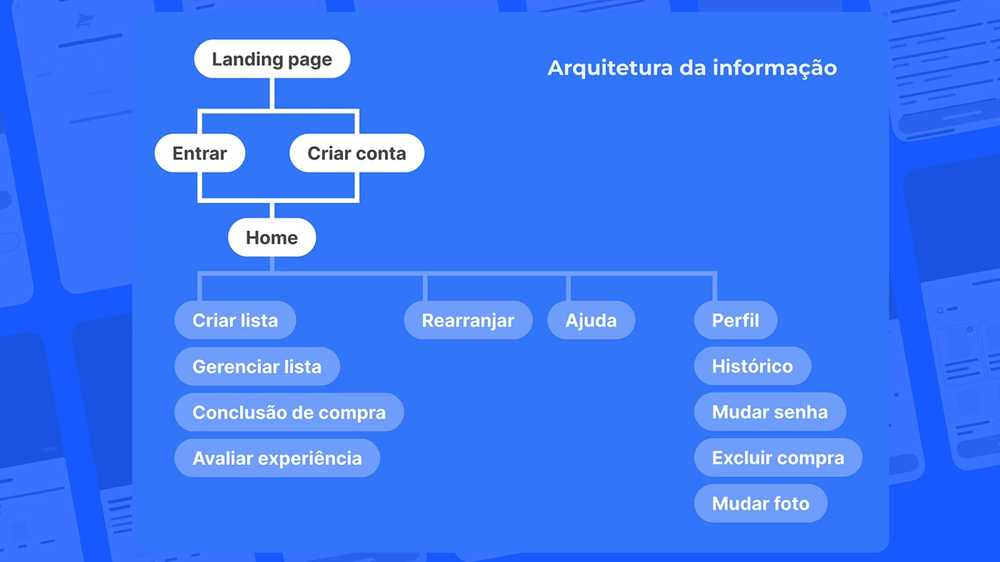
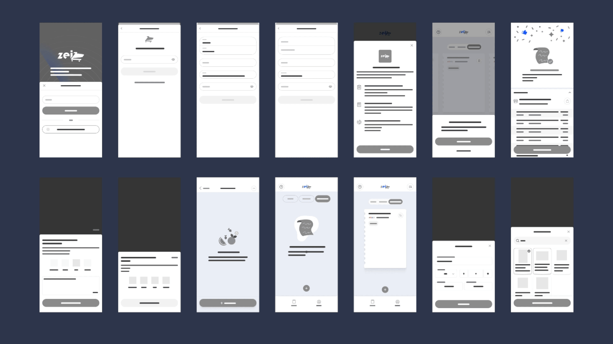

30-second summary
- The problem
- People who go grocery shopping with a list still spend more than planned and sometimes can't find what they came for.
- What I found
- The problem isn't the lack of a list, but what happens to it in the aisle. And an app with real product prices already exists.
- What I proposed
- Cut from 13 features to 3: a shared list, the running total against the budget, and prices at the chosen store.
Context
The problem
Zei was born from a familiar scene: someone writes a list at home, gets to the store, the product isn't on the shelf, they grab a pricier one, take whatever is on sale and find out at the checkout that they went over budget.
The 2024 version treated this as three separate problems: lack of information, a blown budget and out-of-stock products. Looking back, I saw all three share one cause: the purchase decision slips away from the list once the person is in the aisle.
The review path, in 4 steps
- What the project claimed"10x more spending", with no source.
- Public dataPhone lists are followed less than paper ones. Going digital isn't enough.
- CompetitorsReal product prices are already public, from invoice data.
- The proposalMake the list carry weight at decision time, with real prices and the budget in sight. Only 3 features.
Step 1
I replaced unsourced numbers with public data
- 43%of respondents' last five grocery purchases were impulse buys (SPC Brasil and CNDL, 2015)
- 57%of impulse grocery purchases are triggered by a promotion (SBVC and Instituto Qualibest, 2021)
- 15.3%of products were out of stock on Brazilian supermarket shelves in January 2024 (Neogrid Out-of-Stock Index)
How much of the list people actually buy
Range of items bought, comparing a paper list and a phone list.
Each bar shows the middle of the range. Source: Drexel University, 2019.
The finding
Moving the list to a phone isn't enough. It feels easy to change, so it becomes a suggestion, not a commitment.
A list app needs to make the list carry weight at decision time. The SBVC survey backs this up: most people say they plan their shopping. The problem isn't the lack of a list, but what happens to it inside the store.
Hypotheses to test
Without user research, I treat the following as hypotheses, not conclusions:
- Seeing the running total go up against the budget makes people think twice before grabbing something off the list.
- Knowing before leaving home whether a product is available, and at what price, prevents swapping it for a pricier one on the spot.
- A list shared with the household prevents duplicate and forgotten items.
Step 2
I looked at who already solves part of this
I compared Zei with three real apps: two grocery list apps and one price app built from invoice data.
| App | Shared list | Total and budget | Real local prices | What I learned from it |
|---|---|---|---|---|
| Listonic | Yes | Price per item and total | No, prices are typed in | Showing how much is left to spend helps people decide, but typing every price is too much work. |
| Bring! | Yes, in real time | No | No | The icon grid makes the list quick to build and easy to read in the aisle. |
| Menor Preço Brasil | No | No | Yes, from invoices | Price data already exists and is public. But the app searches product by product, not the whole list. |
Sources: Listonic and Bring! (comparison published by Listonic itself), Menor Preço in Espírito Santo (Sefaz-ES, in Portuguese), how Menor Preço Brasil works (in Portuguese).
The open space is in the middle: nobody combines the household list with real prices at the nearest store and a visible budget.
The original project
The 2024 version
The app had four areas: creating and managing lists, finishing a purchase, rating the experience, and profile. Then came wireframes of the main flow and, finally, the visual identity and final screens. The screens are in Portuguese.



Step 3
I reviewed the screens
Without people to test with, I reviewed the 2024 version against Nielsen's 10 heuristics, a classic list of usability best practices. It was just me, so this finds interface issues but doesn't replace a test with people.
- The app promises more than it deliversThe pitch lists 13 features, like a digital queue, a store map and a deals radar, but the app only covers lists and profile. Proposal: keep 3: a shared list, the total against the budget and prices at the chosen store.
- It asks for an account before showing its valueThe first step is "Sign in or create account". Proposal: let people create their first list without an account, and only ask for sign-up when they want to share it.
- "Delete purchase" is hidden in the profileAn action that erases data sits next to "Change password", far from the purchase itself. Proposal: move it into the history, next to the purchase, with a confirmation and an undo option.
- "Rearrange" doesn't say what it doesThe label doesn't make clear whether it sorts the list, the aisles or something else. Proposal: replace it with "Sort by aisle", inside the list.
Next steps
How I'd test it
The next step is to test a prototype with the three changes, with five people who shop for groceries every week.
- Tasks: build a 10-item list for the week, set a budget and simulate a shopping trip at a store where two items are out of stock.
- What to watch: how long it takes to build the list, whether the person notices the budget while shopping and what they do when an item is out of stock.
- How to know it worked: the person finishes within budget and with the items on the list, or makes a conscious swap.
Takeaways
What I learned
The 2024 version bet on many features, a strong identity and big numbers. Going back to it taught me to start from the question "what needs to be true for this to work?" and cut whatever doesn't answer it.
I also learned to look for who has already solved part of the problem before designing. Menor Preço Brasil already existed and would have changed the solution from day one.
Data sources (in Portuguese and English): SPC Brasil and CNDL, 2015 (via O Imparcial); SBVC and Instituto Qualibest, 2021; Drexel University, 2019; Neogrid Out-of-Stock Index.